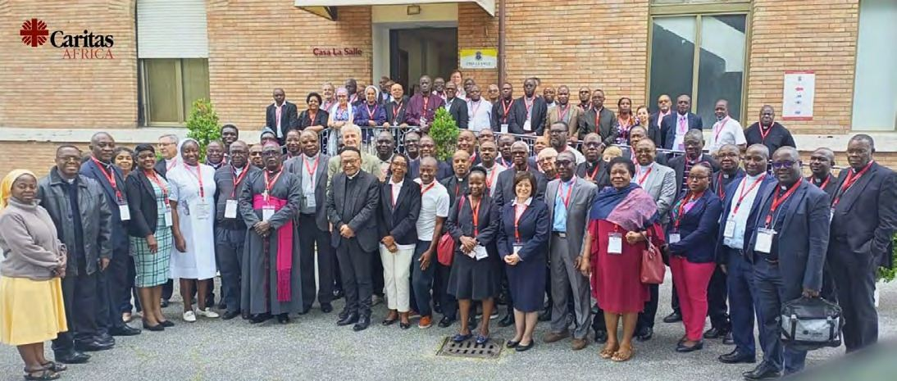

Notre réseau
46 Caritas nationales dans 46 pays d'Afrique, îles comprises, organisées en six zones et coordonnées depuis Lomé.

Six zones, une coordination
Les zones portent le nom des conférences épiscopales régionales. Chacune est coordonnée par une Caritas nationale.
Comment le réseau est organisé
Des 46 organisations membres jusqu'au secrétariat de Lomé, chaque niveau a son rôle.
Source : organigramme du réseau, cadre stratégique 2024–2030.
- Assemblée générale régionaleLes 46 organisations membres, les Caritas nationales.
- Président régionalMgr Pierre CIBAMBO NTAKOBAJIRA, pour le mandat 2023–2027.
- Commission régionaleLe président, le vice-président, le trésorier et les coordinations de zone.
- Secrétariat exécutif régionalL'équipe de Lomé, qui anime et coordonne le réseau au quotidien.
- Six zonesACEAC, ACERAC, AMECEA, CEDOI-M, IMBISA et RECOWA-CERAO.
- 46 organisations membresLes Caritas nationales, au service des plus pauvres de leur pays.
La vie du réseau
Rencontres de zone, anniversaires et partenariats, tels que publiés par Caritas Africa.
L'une des sept régions de Caritas Internationalis
La confédération Caritas Internationalis compte 162 membres, regroupés en sept régions.
- AfriqueCaritas Africa, 46 membres. Vous êtes ici.
- AsieCaritas Asia
- EuropeCaritas Europa
- Amérique latine et CaraïbesCaritas América Latina y el Caribe
- Moyen-Orient et Afrique du NordCaritas MONA
- Amérique du NordCaritas North America
- OcéanieCaritas Oceania
Partager les savoirs du réseau
Les espaces où les Caritas d'Afrique échangent leurs pratiques et leurs documents de travail.